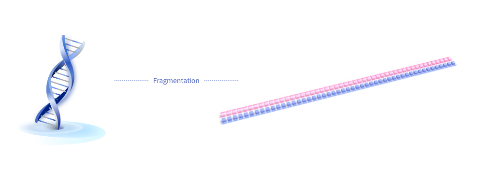
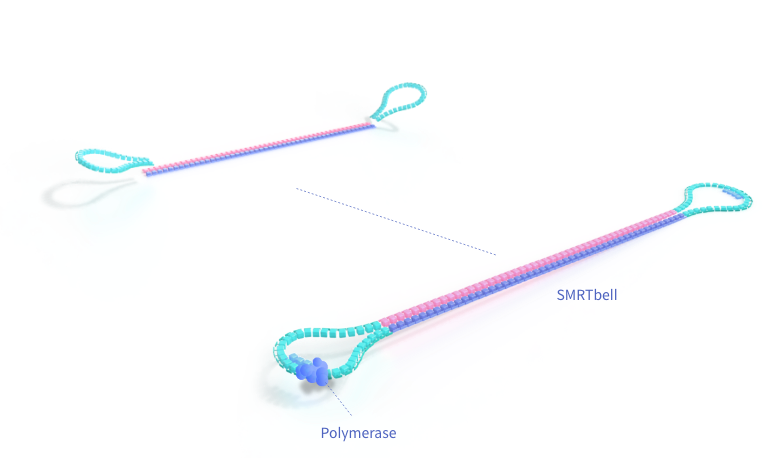
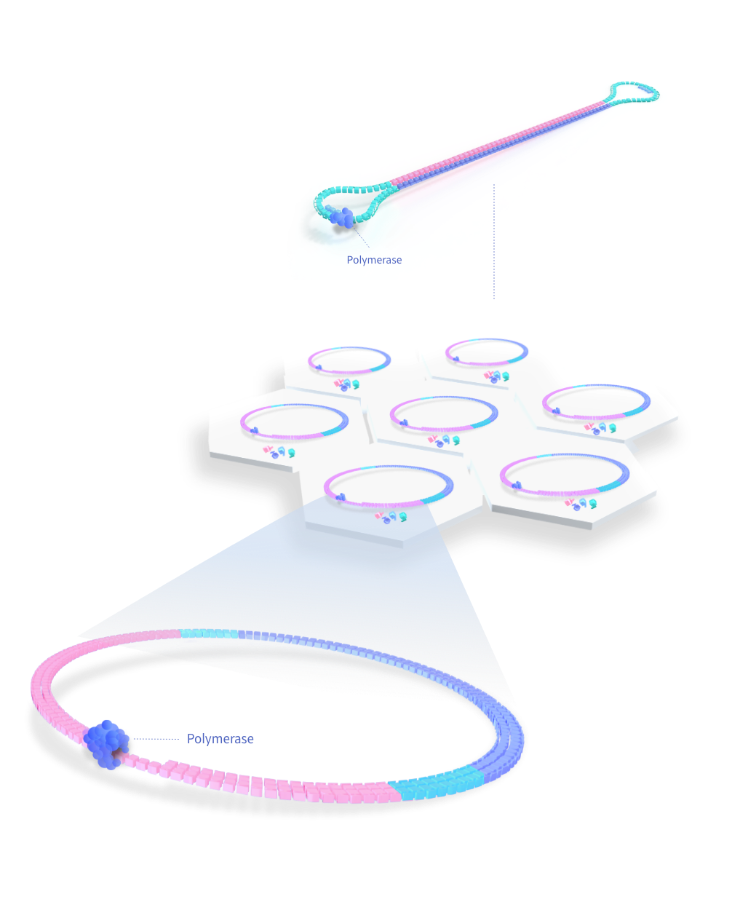

The samples are prepared according to a guide for preparing SMRTbell template for sequencing on the PacBio instrument.

DNA/RNA is first extracted from the sample, and samples which meet quality control standards proceed to library construction.

The SMRTbell library preparation creates a circularized template by
ligating hairpin adapters to the end of a high-quality double stranded
DNA (dsDNA) molecule. After ligation, sequencing primer and sequencing
polymerase are annealed to the library, making it ready for SMRT
Sequencing.
Single Molecule Real-Time (SMRT) Sequencing is the core technology
which powers PacBio long-read sequencing platforms. This approach
enables simultaneous collection of data from numerous wells, using
the natural process of DNA replication to read long fragments of DNA.
The SMRT Cells, to which the prepared SMRTbells are loaded to,
contain millions of zero-mode waveguide (ZMW) units.
Ideally a single molecule of DNA diffuses into the ZMW unit and
binds to the polymerase anchored at the bottom of the ZMW.
Four fluorescent-labeled nucleotides are then added to the SMRT
Cell. As the polymerase starts replication, the incorporation of
a labeled base emits a distinct light pulse which identifies the base.

The replication processes in all ZMWs of a SMRT Cell are recorded as a "movie" of light pulses, where each pulse correspond to a base being
sequenced. Due to the circular nature of the SMRTbell, the polymerase is able to repeatedly sequence the template; after one strand has been
replicated, it can continue incorporating bases onto the next strand. If the lifetime of the polymerase is long enough, both strands of the
SMRTbell can be sequenced multiple times (called "passes").
Real-time signal processing and base calling are performed using Primary Analysis software installed in the instrument.